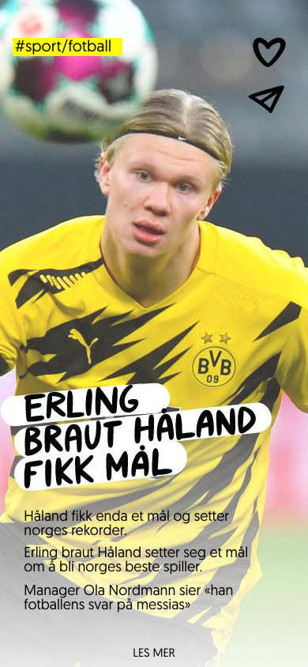

AFTNPSTN
OPPGAVEN
Brief: I denne temaoppgaven skal dere prototype og presentere en
interaktiv løsning for Aftenposten som skal sørge for at unge mellom
18-25 år oppsøker aftenposten.no regelmessig for å få nyheter og
informasjon om hva som skjer rundt seg
I denne prosjektsiden viser vi hvordan vi har designet AFTNPSTN,
en app som er skreddersydd brukeren med korte og konsise artikler som
skal passe til brukerens personlige behov. Appen skal være brukervennlig
med høy tilgjengelighet og kvalitetsinnhold.
Min rolle i dette prosjektet har vært å bidra med innsikt,
konseptutvikling, visuell identitet, brukertesting og UX/UI.
PROSJEKTDETALJER
Kunde: Aftenposten i samarbeid med Fagskolen Kristiania
Team: Joanna Barrögård, Izmir Neskic, Even Næss & Nina Knoph
Leveranse: Innsiktsarbeid, user interviews, konseptutvikling,
klikkbar prototype og UX/UI design
Tidsramme: 5 uker
Undersøkelser til appens funksjon
Vi valgte å gjennomføre både kvalitative og kvantitive undersøkelser for å
lære å kjenne målgruppen bedre. Vi ønsket å starte med en kvalitativ
spørreundersøkelse hvor vi brukte Google Forms. Denne sendte vi ut til
venner og bekjente som befinner seg i målgruppen. Resultatet var
overveldende; hele 62 unge voksne mellom 18 - 25 år svarte. Grunnen til at
vi ønsket å starte med en kvalitativ undersøkelse var for å kunne få et
godt nok grunnlag for vår kvantitative undersøkelse. Her intervjuet vi 9
stk mer i dybden om deres forhold til nyheter og Aftenposten. Etter å ha
evaluert svarene fra både spørreundersøkelsen og dybdeintervjuene satt vi
igjen med mye god innsikt.
Konklusjon
Basert på resultatene og konklusjonen er dette det vi mente var det
viktigste for oss å ta med oss når vi designet denne appen:
-
Ungdommer bruker mye tid på mobilen sin. Av de 62 vi spurte snittet de
på 4 timer på mobilen hver dag --> Vi ønsket derfor å lage en app som
skulle være enkel for de å bruke, selvom de bare trykket på den fordi
de ”kjedet seg”
-
De mest brukte appene er TikTok, Instagram og Snapchat og mange leser
nyhetene sine her --> Vi ønsket derfor å designe en app som har
lignende funksjoner som de appene de bruker mest. Dette mener vi er
viktig for at de skal gidde å bruke den. Det er gjenkjennelig og de
slipper å bruke tid på å lære seg en ny app og nye funksjoner
-
Unge voksne har ulike interesser og dermed et ønske om å lese om ulike
ting --> Vi ønsket derfor at de skal kunne personifisere appen slik at
de nyhetene de er mest interessert i er de som dukker opp. Men
selvfølgelig har vi lagt til en funksjon som gjør at man får med seg
det viktigste som skjer uansett. På den måten unngår man å føle seg
dum eller uvitende som ikke får med seg det viktigste som skjer
-
De ønsker ikke å betale for å lese artikler --> Vi ønsker at appen
skal være gratis å bruke
-
Unge voksne leser nyheter både om morningen, ettermiddagen, kvelden og
når de har tid --> Vi ønsket derfor ikke å lage en app som kun kom med
nyheter på ett gitt tidspunkt i løpet av døgnet, men som oppdaterte
seg når noe skjedde og så er det opp til brukerene å gå inn når det
passer for de
Behovsanalyse
AFTENPOSTENS PROBLEMSTILLING
Hvordan kan Aftenposten presentere nyheter og relevant innhold til unge
mellom 18-25 for å øke bruk og engasjement blant målgruppen?
VÅR PROBLEMSTILLING
Hvordan få unge voksne (18-25 år) til å vise økt interesse og engasjement
for nyheter og i tillegg få målgruppe til å bruke / foretrekke Aftenposten
sine digitale tjenester fremfor konkurrentenes forskjellige plattformer?
VÅR PROBLEMLØSNING
Løsningen blir å lage en skreddersydd app med korte og konsise artikler
som skal passe til brukerens personlige behov. Appen skal være
brukervennlig* med høy tilgjengelighet og kvalitetsinnhold*
*brukervennlighet --> enkel å navigere, maks x antall saker per tema,
begrensede og intuitive funksjoner
*kvalitetsinnhold --> bedre bilder, lette og enkle overskrifter, tydelig
innhold og en sterk identitet
MÅLGRUPPE
Naive, utålmodige og stressede unge voksne mellom 18-25 år som er
interessert i teknologi og tilbringer mye av tiden sin på skole / jobb /
aktiviteter
Konsept
Med bakgrunn i brukerundersøkelsene og intervjuene vi har gjennomført har
vi fått god innsikt i vanene og ønskene til unge mellom 18 - 25 år. Det at
målgruppen er utålmodige og har dårlig tid / liker å være effektive / har
andre ting å gjøre enn å lese nyheter har gjort at vi har kommet frem til
at vi ønsket at vårt konsept skulle være nyheter levert på en kort og
konsis måte, samtidig som brukerne skulle få muligheten til å skreddersy
sin egen feed og dermed lese saker som interesserer kun de. Noe av det som
kjennetegner Generasjon Z er at de har dårlig tid og lite penger. Noe av
det som kjennetegner Aftenposten i dag er at du har god tid til å lese
alle sakene og penger å betale for å lese de. Det krever ikke mye for å se
at det ikke går helt hånd i hånd. Derfor mener vi appen til Aftenposten må
ha disse forutsetninger for å klare å lykkes med målgruppen:
-
Det skal ikke være nødvendig å ha et abonnement for å lese saker - alt
skal være gratis
- Nyhetene skal være lett tilgjengelige
-
Det skal være enkle oversikter slik at man raskt kan få oversikt over
hva som har skjedd
-
Designet skal være et lekent og moderne design med gjenkjennbare og
brukbare funskjoner
-
Det skal være mulighet for å kunne personifisere ut i fra interesser
- Det skal skrives mer om saker som interesserer målgruppen
-
De må være tilstede der hvor målgruppen er - det betyr at de må ha
kontoer på hvertfall Instagram og Snapchat slik at de blir synlige.
-
Det er viktig å skape en tilnærming og en ”top of mind” for målgruppen
slik at man blir den foretrukne nyhetsleverandøren
Med all innsikt og forutsetningen har vi fått har vi konstruert en setning
som vi mener oppsummerer hele konseptet vårt:
Vårt konsept skal handle om at informasjon i form av artikler, bilder og
videoer skal være korte og konsise. Det skal være gratis, og det viktigste
i artikkelen skal kunne fremheves med en funksjon slik at man kun leser
det viktigste, men vi har også gitt brukeren valget med å lese hele
artikkelen da vi vet at noen unge voksne også ønsker det. All informasjon
som presenteres skal være skreddersydd til brukerens behov og skal bli
tydeliggjort av kontraster, lekenhet og minimalisme. Nyhetene og motivet
er likt, men det er systematisk komprimert slik at urelevant informasjon
forsvinner.
Hifi prototype
Gjennomgang av en brukerreise fra appen åpnes til du trykker på dagens
gladsak / fun fact til story og at du leser tre ulike artikler og trykker
på hihglight-funksjonen


LES MER
Ønsker du å lese hele prosessdokumentasjonen?
Klikk her